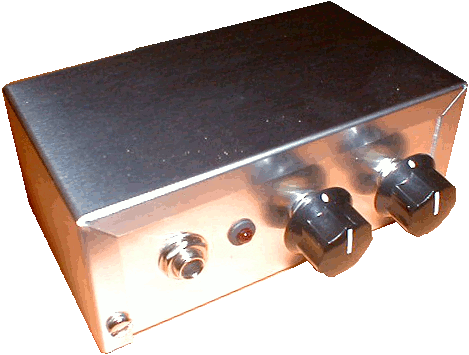
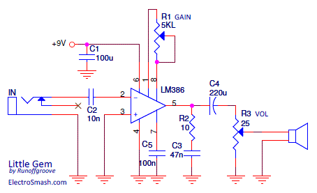
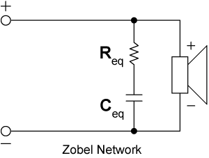
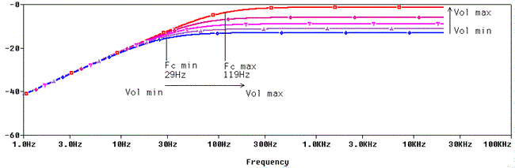
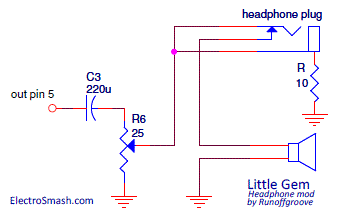

Table of contents1. Little Gem Schematic.
1.1 Gain & Volume Controls.
1.2 Stabilization Techniques.
2. Little Gem Frequency Response.
3. Little Gem Modifications.
4. Resources.
This guitar mini amplifier takes the basic Smokey Amp circuit and adds several improvements like power supply decoupling caps, a Zobel Network and Gain / Master Volume controls. 
1.1 Gain & Volume Controls.
Gain: To make the LM386 a more versatile amplifier, a 5K logarithmic R1 potentiometer is placed between pins 1 and 8 to adjust the gain from 26 (28dB) to 200 (46db) following the general LM386 voltage gain formula:
Where Z1-5 and Z1-8 are the impedances between the respective pins. Note that Z1-5 internal resistance is 15K and Z1-8 is 1.35K.
Volume: The volume control is just a voltage divider with an R3 rheostat in the last stage of the circuit.
TIP: The 5K potentiometer R1 can be reduced to 2K or even 1K (like in the Ruby Amp). Doing so, the minimum Gain is increased and the control seems to have more responsiveness and works better over nearly the whole way of the pot.
1.2 Stabilization Techniques.
Unlike the Smokey Amp, the Little Gem does include some tricks to avoid noise and instability:
- The supply pin 6 is bypassed to ground with a 100uF C1 capacitor to prevent oscillation, should be placed as close to the chip as possible.
- Pin 2 input (-) signal is coupled with a 0.01uF C2 cap so not to disturb the internal biasing and remove any DC offset of the input signal. This capacitor may also reduce the bass response because it produces a high-pass filter together with the LM386 input impedance (which is 50KΩ according to the datasheet) so, frequencies below 318Hz are attenuated:
fc = 1/ (2 x π x R x C) = 1/ (2 x π x 50KΩ x 10nF) = 318.3Hz.
This bass roll-off is not bad if you want to avoid a small speaker driver from farting out. If you are using a big quality speaker this 10nF cap could be increased to 100nF or 470nF so the deep bass freqs will be also reproduced).
Zobel Network:
A Zobel Network formed by an R2 10Ω resistor and a C3 0.047uF cap to ground is introduced in the output path, in order to stabilize the amp and restore the clean tones wiping some spurs that manifested themselves as spiky farting tones.
The typical component values of a Zobel Network are a few ohms resistor and a 10 to 100 nF capacitor.
These values are quite generic since the Zobel is not a compensating circuit for the amplifier but for the load (speaker), and the load is pretty generic in audio amplifiers. This network smooths out the rising curve of the speaker's impedance, preventing oscillation and also linearizing crossover loads.

The way to derive the component values for the Zobel is following:
- The resistor is chosen to equal the nominal resistance (32Ω, 8Ω, 4Ω, etc.)
- The capacitor is calculated using C= Le/R2, where Le= inductance of speaker's coil.
Zobel Network placement: in some occasions Zobels mounted on circuit board cause oscillation, that is why it should be placed as close to the chip as possible or even more effectively hardwired straight to speaker binding posts.
2. Little Gem Frequency Response
The output C4 220uF coupling cap together with the rheostat (volume pot) and the load (speaker) creates a high pass filter also called bass cut filter. Unfortunately, the cut-off filter frequency depends on the Volume pot position. Going from 119 Hz at top volume to 29Hz at min volume:
- fcmin: with the volume pot wiper in the min position (set in top-down position), producing minimum output volume, the load is connected to ground. find below the frequency response in red color.
- fcmax: with the volume pot wiper in the max position (set in top-up position), generating maximum output volume, the load is in parallel with the volume resistor, find below the frequency response in blue color.

The cut-off frequency at minimum volume is 29 Hz, this value can be too low because the 50-60Hz harmonics from the power network may create a hum. However at this volume level, it does not matter, it is too weak to be noticed.
3. Little Gem Mods.
The most requested modification is to add an auxiliary headphone output. One again, RunoffGroove proposed an easy solution: 
The speaker will be muted when the headphones are plugged. The resistor between the headphone plug sleeve and ground will reduce the headphones volume level. The reference recommended value is 10Ω, but depending on the headphones impedance, which varies from one to another model, can be adjusted to suit the user taste.
4. Resources
Little Gem home in Runoffgroove.
GhostEffects.co.uk Little Gem.
Teemuk Kyttala Solid State Guitar Amplifiers, the Holy Scripture.
Little Gem faq and mods in Runoffgroove.
Zobel Networks info in Wavecor.com
LM386 Stabilization tricks in ChipMusic.org
My sincere appreciation to T. Juergen, Oliver Adelstein and Tim Anderson for your support.
Thanks for reading, all feedback is appreciated 


{kind=link}